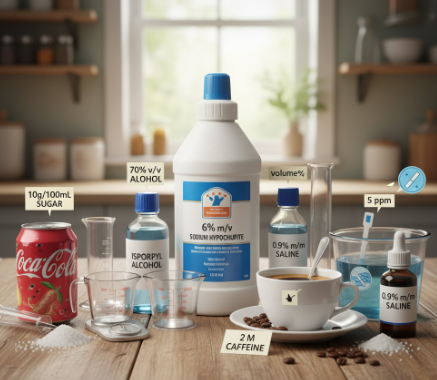

🔬 EL CÓDIGO SECRETO DE LAS SOLUCIONES
¿Qué son las unidades de concentración química?

Son formas de medir cuánto soluto (la sustancia disuelta) hay en una cantidad de solución o solvente usando la cantidad de partículas o sustancia (moles) en lugar de solo masa o volumen. Estas unidades son importantes para comprender las reacciones químicas y preparar soluciones necesarias.